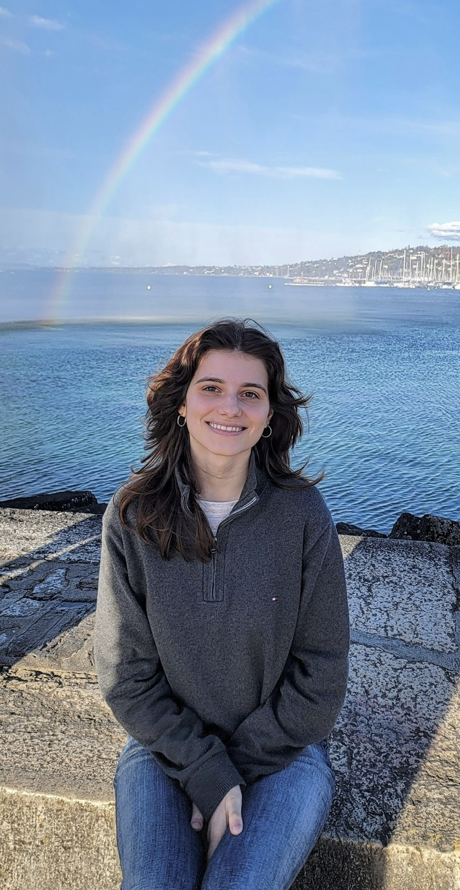
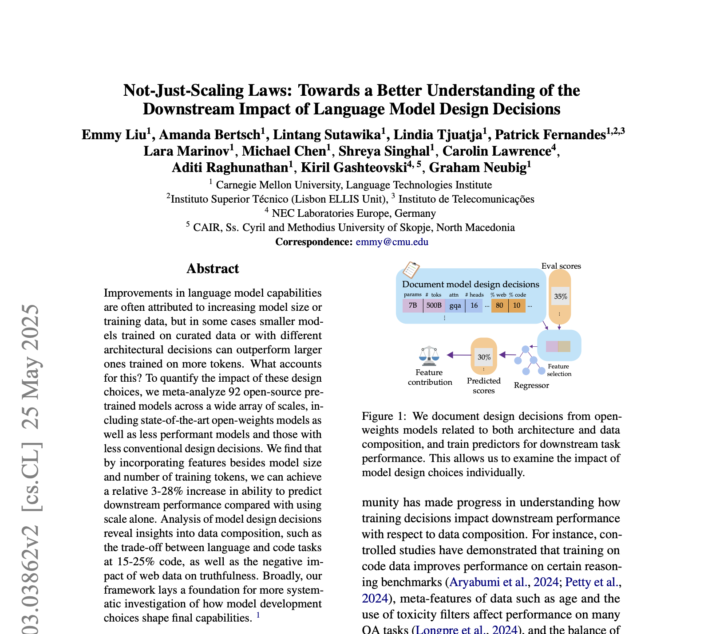
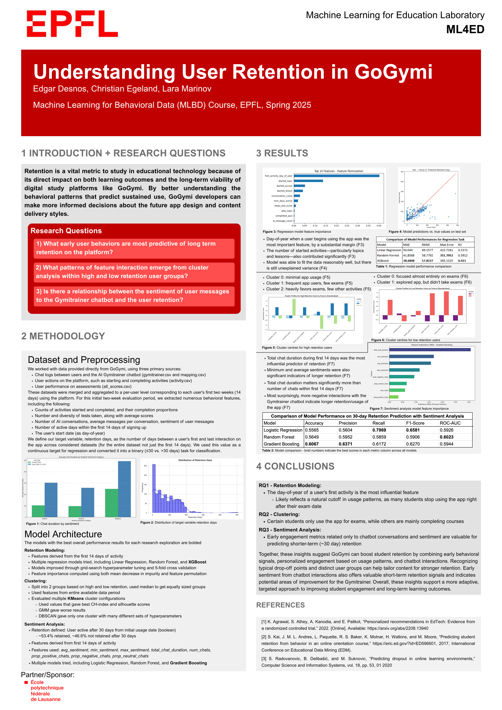
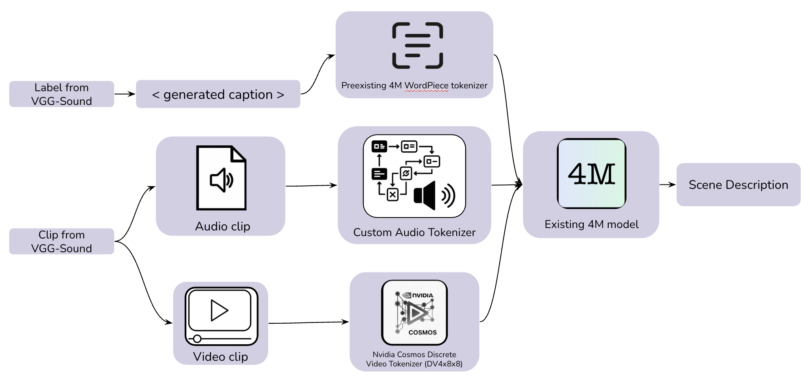
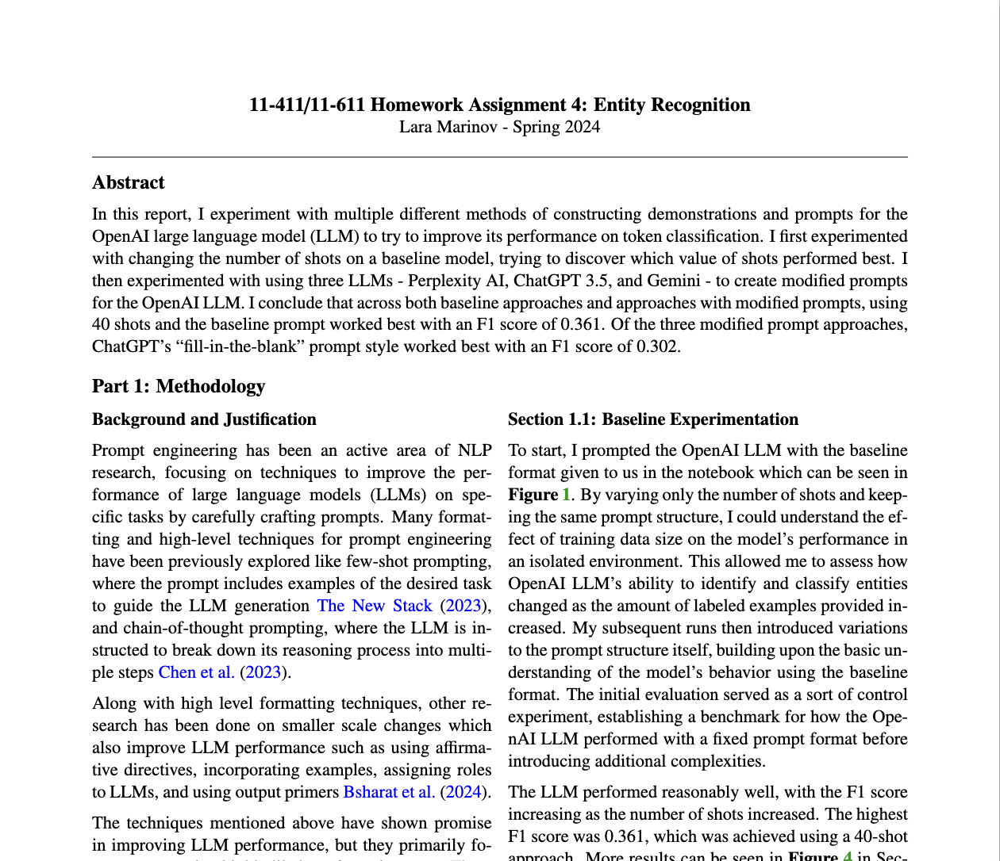

/’lɑːɹə m'e:ɹɪnˌɔːv/
I graduated in Fall 2025 with my B.S. in Computer Science with concentrations in Software Engineering and Language Technologies from Carnegie Mellon University. I was on an exchange semester at École Polytechnique Fédérale de Lausanne (EPFL) in Spring 2025. I’m passionate about solving real-world problems that involve both programming and human languages. My interests lie at the intersection of NLP and software engineering—where advances in AI can drive meaningful impact through the way we build and interact with software.
My research interests have focused on large language models (LLMs) and understanding how different design choices affect their behavior and performance. I’m especially interested in how we can make these models more efficient, interpretable, and aligned with real-world use cases. Outside of research, I’ve also interned as a developer in industry, where I gained solid experience working with large codebases, contributing to production systems, and collaborating across big, cross-functional teams. This combination of research and hands-on engineering has shaped the way I think about building and applying AI systems to software engineering and beyond.
My research interests span various topics in NLP, software engineering, and linguistics.

Emmy Liu, Amanda Bertsch, Lintang Sutawika, Lindia Tjuatja, Patrick Fernandes, Lara Marinov, Michael Chen, Shreya Singhal, Carolin Lawrence, Aditi Raghunathan, Kiril Gashteovski, Graham Neubig; 2025
PDFHere's a selection of projects I've done recently.

We analyzed behavioral data from GoGymi, a digital study app aimed at middle school students, to identify key early signals of long-term user retention. We focused on three main research questions and used a number of ML models to analyze the data. Check out our poster for more details on our analysis. This project was done as team of three for the course "Machine Learning for Behavioral Data" at EPFL.
Poster
Scene4M is an extended version of the 4M multimodal model that combines the current 4M modalities with new video and audio data to provide environment descriptions aimed at helping individuals with impaired vision navigate their surroundings. This project was done as team of four for the course "Communications Project" at EPFL.
Website PDF
I experimented with multiple different methods of constructing demonstrations and prompts for the OpenAI LLM to try to improve its performance on token classification. I explored utilizing LLMs themselves as auxiliary tools within the overall prompt engineering process.
PDFI collect a list of my favorite CS comic strips here.
These are some of my favorite pictures from the places I've been.
Also, I love Adam ♥